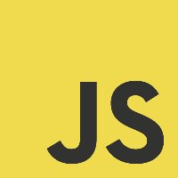

Skills
Front-end
HTML, CSS, JavaScript,
React, Web APIs
React, Web APIs
Back-end
Ruby on Rails, NodeJS,
mongoDB, Express JS
mongoDB, Express JS



I’m a recent graduate from a software engineering course at General Assembly and I’m interested in pursuing a career as a full-stack developer. I have a science background, especially in biology and human sciences. Studying in the lab led me to develop my problem-solving skills by figuring out how to think creatively and work collaboratively for implementing a solution.
Throughout the degree, I realised that science and software engineering have many things in common. In science, we learn the fundamentals of nature and the human body, and in software engineering, we learn the fundamentals of programming and computer science. I would love to expand and apply my skills and knowledge to create computer systems and applications that are easily accessible so whoever uses the program can enjoy it without experiencing difficulties.
Site made with JS, HTML and CSS © 2022 Cassie Lee